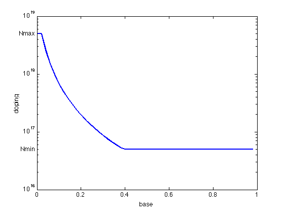

% Boyd, Kim, Vandenberghe, and Hassibi, "A tutorial on geometric programming" % Joshi, Boyd, and Dutton, "Optimal doping profiles via geometric programming" % Written for CVX by Almir Mutapcic 02/08/06 % (a figure is generated) % % Determines the optimal doping profile that minimizes base transit % time in a (homojunction) bipolar junction transistor. % This problem can be posed as a GP: % % minimize tau_B % s.t. Nmin <= v <= Nmax % y_(i+1) + v_i^const1 <= y_i % w_(i+1) + v_i^const2 <= w_i, etc... % % where variables are v_i, y_i, and w_i. % discretization size M = 50; % M = 1000; % takes a few minutes to process constraints % problem constants g1 = 0.42; g2 = 0.69; Nmax = 5*10^18; Nmin = 5*10^16; Nref = 10^17; Dn0 = 20.72; ni0 = 1.4*(10^10); WB = 10^(-5); C = WB^2/((M^2)*(Nref^g1)*Dn0); % exponent powers pwi = g2 -1; pwj = 1+g1-g2; % optimization variables cvx_begin gp variables v(M) y(M) w(M) % objective function is the base transmit time tau_B = C*w(1); minimize( tau_B ) subject to % problem constraints v >= Nmin; v <= Nmax; for i = 1:M-1 if( mod(i,100) == 0 ), fprintf(1,'progress counter: %d\n',i), end; y(i+1) + v(i)^pwj <= y(i); w(i+1) + y(i)*v(i)^pwi <= w(i); end y(M) == v(M)^pwj; w(M) == y(M)*v(M)^pwi; cvx_end % plot the basic optimal doping profile figure, clf nbw = 0:1/M:1-1/M; semilogy(nbw,v,'LineWidth',2); axis([0 1 1e16 1e19]); xlabel('base'); ylabel('doping'); text(0,Nmin,'Nmin ', 'HorizontalAlignment','right'); text(0,Nmax,'Nmax ', 'HorizontalAlignment','right'); disp('Optimal doping profile is plotted.')
Calling Mosek 9.1.9: 785 variables, 343 equality constraints
For improved efficiency, Mosek is solving the dual problem.
------------------------------------------------------------
MOSEK Version 9.1.9 (Build date: 2019-11-21 11:32:15)
Copyright (c) MOSEK ApS, Denmark. WWW: mosek.com
Platform: MACOSX/64-X86
Problem
Name :
Objective sense : min
Type : CONIC (conic optimization problem)
Constraints : 343
Cones : 196
Scalar variables : 785
Matrix variables : 0
Integer variables : 0
Optimizer started.
Presolve started.
Linear dependency checker started.
Linear dependency checker terminated.
Eliminator started.
Freed constraints in eliminator : 47
Eliminator terminated.
Eliminator started.
Freed constraints in eliminator : 0
Eliminator terminated.
Eliminator - tries : 2 time : 0.00
Lin. dep. - tries : 1 time : 0.00
Lin. dep. - number : 0
Presolve terminated. Time: 0.00
Problem
Name :
Objective sense : min
Type : CONIC (conic optimization problem)
Constraints : 343
Cones : 196
Scalar variables : 785
Matrix variables : 0
Integer variables : 0
Optimizer - threads : 8
Optimizer - solved problem : the primal
Optimizer - Constraints : 294
Optimizer - Cones : 196
Optimizer - Scalar variables : 736 conic : 588
Optimizer - Semi-definite variables: 0 scalarized : 0
Factor - setup time : 0.00 dense det. time : 0.00
Factor - ML order time : 0.00 GP order time : 0.00
Factor - nonzeros before factor : 1383 after factor : 1545
Factor - dense dim. : 0 flops : 2.06e+04
ITE PFEAS DFEAS GFEAS PRSTATUS POBJ DOBJ MU TIME
0 1.6e+00 2.0e+01 4.3e+02 0.00e+00 -4.271448072e+02 0.000000000e+00 1.0e+00 0.00
1 4.5e-01 5.4e+00 9.7e+01 -5.62e-03 -2.010492860e+02 -1.725419645e+01 2.8e-01 0.01
2 1.3e-01 1.6e+00 1.8e+01 5.38e-01 -9.319749265e+01 -2.879246268e+01 8.1e-02 0.01
3 2.9e-02 3.5e-01 1.3e+00 9.94e-01 -4.392050527e+01 -3.111037320e+01 1.8e-02 0.01
4 7.9e-03 9.6e-02 1.7e-01 1.58e+00 -2.730920243e+01 -2.460249031e+01 4.9e-03 0.01
5 3.7e-03 4.5e-02 5.6e-02 1.18e+00 -2.501399990e+01 -2.381274311e+01 2.3e-03 0.02
6 1.4e-03 1.7e-02 1.3e-02 1.09e+00 -2.383565001e+01 -2.340201373e+01 8.6e-04 0.02
7 3.4e-04 4.1e-03 1.5e-03 1.04e+00 -2.332141823e+01 -2.321680161e+01 2.1e-04 0.02
8 4.2e-05 5.0e-04 6.5e-05 1.01e+00 -2.316897429e+01 -2.315622426e+01 2.6e-05 0.02
9 4.8e-06 5.9e-05 2.6e-06 1.00e+00 -2.314960657e+01 -2.314812364e+01 3.0e-06 0.02
10 7.4e-07 8.9e-06 1.5e-07 1.00e+00 -2.314744030e+01 -2.314721524e+01 4.6e-07 0.02
11 2.0e-07 2.4e-06 2.1e-08 1.00e+00 -2.314715833e+01 -2.314709779e+01 1.2e-07 0.02
12 2.6e-08 5.6e-08 7.6e-11 1.00e+00 -2.314705656e+01 -2.314705514e+01 2.9e-09 0.02
13 1.5e-09 3.2e-09 1.0e-12 1.00e+00 -2.314705423e+01 -2.314705415e+01 1.6e-10 0.02
Optimizer terminated. Time: 0.03
Interior-point solution summary
Problem status : PRIMAL_AND_DUAL_FEASIBLE
Solution status : OPTIMAL
Primal. obj: -2.3147054228e+01 nrm: 3e+00 Viol. con: 1e-09 var: 1e-10 cones: 0e+00
Dual. obj: -2.3147054147e+01 nrm: 2e+01 Viol. con: 0e+00 var: 9e-10 cones: 0e+00
Optimizer summary
Optimizer - time: 0.03
Interior-point - iterations : 13 time: 0.02
Basis identification - time: 0.00
Primal - iterations : 0 time: 0.00
Dual - iterations : 0 time: 0.00
Clean primal - iterations : 0 time: 0.00
Clean dual - iterations : 0 time: 0.00
Simplex - time: 0.00
Primal simplex - iterations : 0 time: 0.00
Dual simplex - iterations : 0 time: 0.00
Mixed integer - relaxations: 0 time: 0.00
------------------------------------------------------------
Status: Solved
Optimal value (cvx_optval): +1.57873e-12
Optimal doping profile is plotted.
